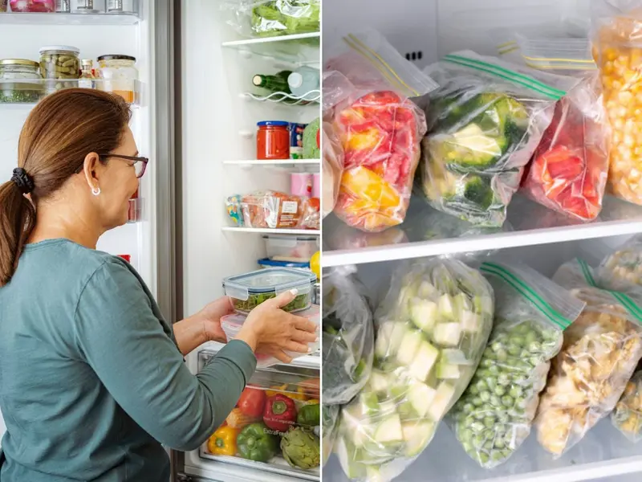

Tips
A la hora de almacenar nuestros alimentos...

- Usar recipientes herméticos: Los envases de vidrio o plástico con tapa son ideales para evitar la
contaminación cruzada y mantener la humedad bajo control.
- Refrigerar los alimentos a tiempo: No dejes la comida fuera por más de dos horas antes de guardarla
en la nevera, especialmente carnes, mariscos, huevos o lácteos.
- No sobrecargar el refrigerador: Es importante que haya suficiente espacio para que el aire frío
circule y mantenga una temperatura uniforme.
- Mantener la temperatura adecuada: El refrigerador debe estar a 4°C y el congelador a -18°C para
prevenir el crecimiento de microorganismos peligrosos.
- Desechar alimentos en mal estado: Si un alimento presenta moho o un olor inusual, lo más seguro es
descartar para evitar riesgos de intoxicación.
Volver